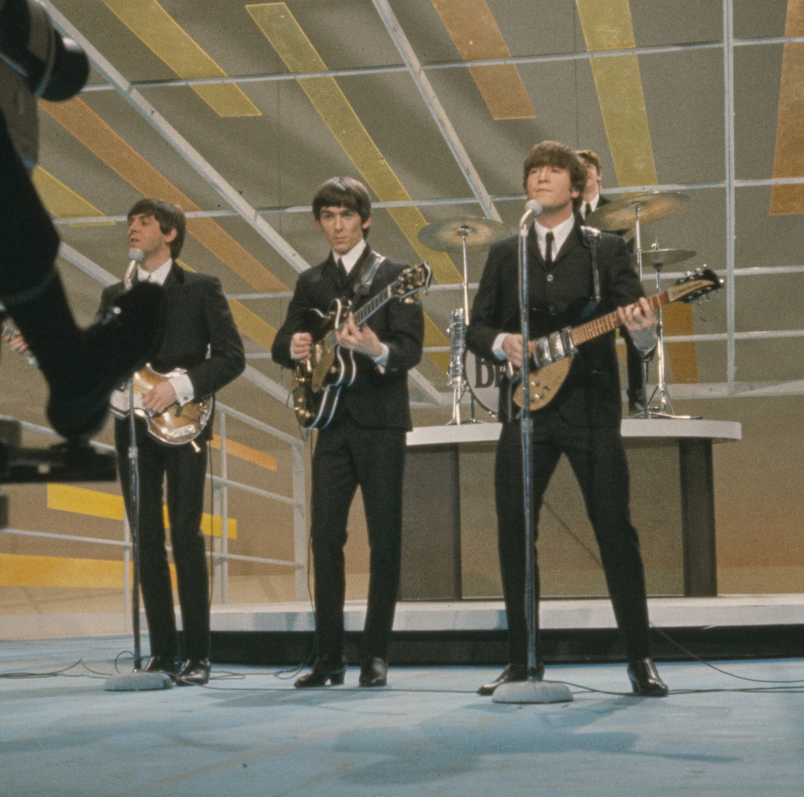

"Please Please Me" is the single that turned The Beatles from a promising Liverpool band into UK chart-toppers.
John Lennon wrote it as his own attempt at a Roy Orbison song.
George Martin's decision to speed it up in the studio is what made it a hit.

Table of Contents
- How John Lennon Wrote It as a Roy Orbison Homage
- George Martin's Tempo Change That Made It a Hit
- Did It Really Top the UK Charts?
- FAQ
How John Lennon Wrote It as a Roy Orbison Homage
John Lennon wrote the song alone, in Liverpool, in June 1962.
He worked it out at his aunt Mimi's house on Menlove Avenue.
Two Different "Please" Lines, Combined Into One
Lennon later called it his own attempt at writing a Roy Orbison song, modeled on the aching build of "Only the Lonely."
He also borrowed a line from an old Bing Crosby record: "Please lend a little ear to my pleas."
The double use of "please" in the title came from combining both influences into one hook.
George Martin's Tempo Change That Made It a Hit
The Beatles recorded the song on November 26, 1962, at EMI Studios in London.
It came the day after a Sunday night gig at the Cavern Club.
From Slow Ballad to Pop Single
Lennon's original version was a slow, bluesy ballad.
George Martin thought it sounded dreary and unlikely to be the hit the band needed.
He asked a simple question: could they play it faster?
Paul McCartney later remembered not even understanding what Martin meant by tempo at first.
Once the band picked up the pace, the song transformed into the driving pop single fans know today.
At the end of the session, Martin told them, "Gentlemen, you have just made your first number one record."
Did It Really Top the UK Charts?
"Please Please Me" was released in the UK on January 11, 1963, backed with "Ask Me Why."
The single topped both the NME and Melody Maker charts.
The Record Retailer chart, the one later treated as the official UK chart, stalled it at number two behind Frank Ifield's "The Wayward Wind."
The song went on to give its name to The Beatles' debut album.
That LP was recorded specifically to capitalize on the single's success.
Capitol re-released the single in the US on January 3, 1964, backed with "From Me to You."
It reached number three on the Billboard Hot 100 as Beatlemania took hold.
FAQ
Who wrote Please Please Me?
John Lennon wrote it alone, in Liverpool in June 1962.
He worked it out at his aunt Mimi's house on Menlove Avenue.
Why did George Martin change the song's tempo?
Martin thought Lennon's original slow, bluesy version was dreary and unlikely to be a hit.
He asked the band to play it faster and turn it into a pop song.
Did it reach number one in the UK?
It topped both the NME and Melody Maker charts.
The Record Retailer chart, later treated as the official UK chart, only placed it at number two.
How did it perform in the US?
Capitol re-released it in the US on January 3, 1964.
It reached number three on the Billboard Hot 100 as Beatlemania took hold.
It gave The Beatles their first real chart-topper and set the pattern for the British Invasion & Beat Music that followed.
Hear where the story continues with She Loves You.
Back to the 1960smusic.net homepage to explore every genre of the decade, starting with "Please Please Me" itself.